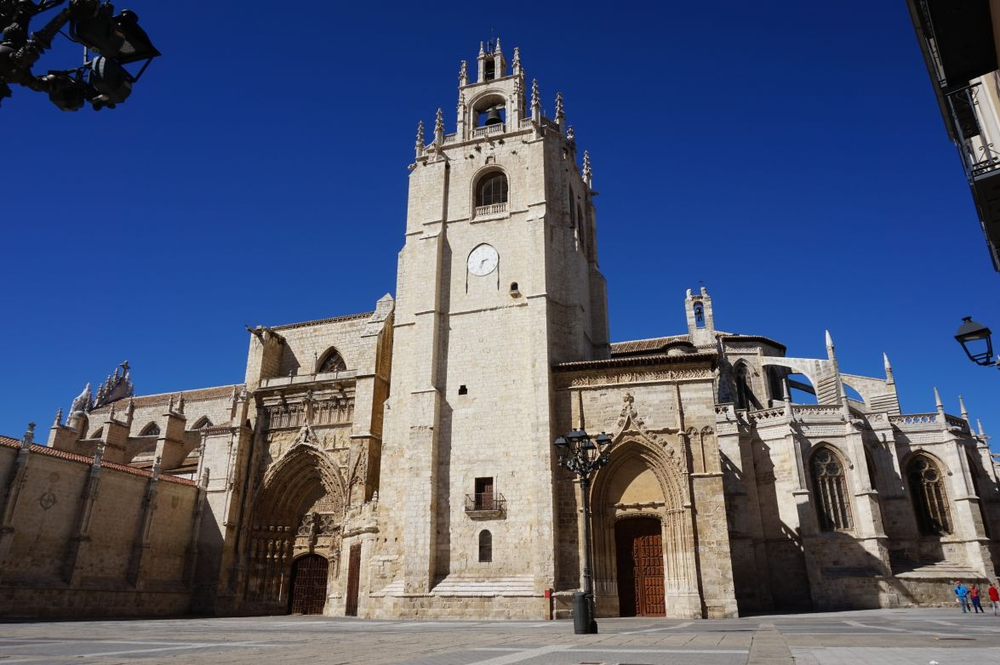
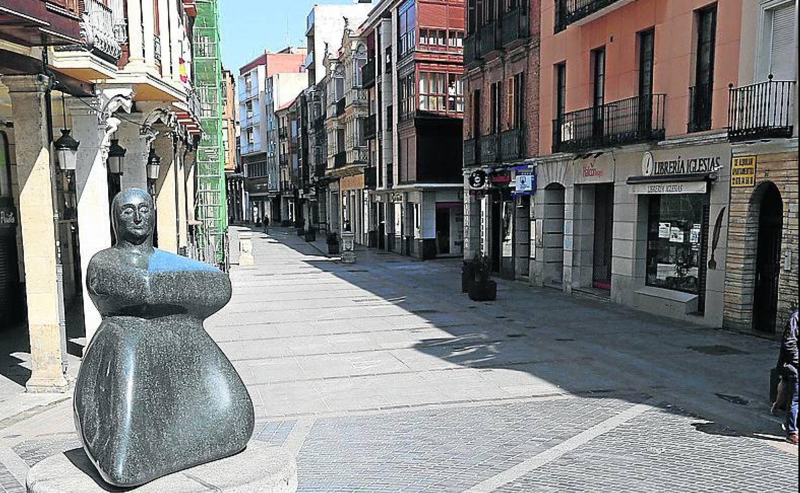

| Provincias | |
|---|---|
| León | |
| Zamora | |
| Salamanca | |
| Soria | |
| Segovia | |
| Ávila | |
| Burgos | |
| Valladolid |
Palencia es una ciudad y municipio español de la comunidad autónoma de Castilla y León, capital de la provincia de Palencia. Se encuentra situada en la llanura de Tierra de Campos, a orillas del río Carrión.
Ubicada a 749 metros sobre el nivel del mar, dista 235 km de Madrid y 47 km de Valladolid, siendo las dos capitales de provincia españolas más próximas entre sí.
El municipio cuenta con una población de 78 892 habitantes (INE 2017) sobre una extensión de 94,95 km². Por su parte, el alfoz de la ciudad, conformado por diez municipios, cuenta con más de 20 000 habitantes, que unidos a los de la capital suman más de 100 000 personas. Es un importante centro industrial de Castilla y León.
La ciudad de Palencia se encuentra en el norte de la península ibérica, en la submeseta Norte. El parque del Salón de Isabel II, centro geográfico de la ciudad, está situado en las coordenadas: 42º00'40 de latitud norte y 4º31'59 de longitud oeste. Se encuentra a 749 metros sobre el nivel del mar.
Foto extraida de Turismo en Palencia.
Las localidades más importantes son Palencia,Osorno y Venta de Baños.
La capital se sitúa en el valle del río Carrión cerca de su desembocadura en el Pisuerga. El primero atraviesa la ciudad de norte a sur, y se abre en tres brazos al entrar en la ciudad, formando la isla del Sotillo y otra pequeña isla, ambas ocupadas por un parque llamado El Sotillo de los Canónigos.
Palencia dispone también de un monte con 1438 ha de robles y encinas a 6 km de distancia y a 865 msnm., conocido como «Monte el Viejo». El monte, que es uno de los lugares de esparcimiento y ocio para la población, es accesible por una carretera y un carril-bici. La vegetación está formada en la parte más alta y seca por encinas y quejigos y a medida que se desciende en altitud va tornando más verde, a quejigos, robles y chopos. En el monte se halla una cerca de gran tamaño en la que habitan ciervos autóctonos que pueden ser avistados con facilidad por los visitantes. Además de la reserva cinegética, el Monte el Viejo dispone de varias instalaciones: rutas con obstáculos y aparatos para ejercitarse, piscinas municipales, un bar y un restaurante, un refugio y las llamadas Casa Pequeña y Casa Grande; la última es una posada del siglo XVI.
En los alrededores de la ciudad los cultivos salpicados de bosquetes de chopos, robles y encinas son la vegetación más abundante.
El cauce verdadero del canal de Castilla no atraviesa la ciudad, pero un ramal, llamado la Dársena, sí se adentra en las afueras del casco. Esta dársena se utilizaba para cargar mercancías, pero con la llegada del ferrocarril cayó en desuso. Actualmente se encuentra rehabilitada para el turismo y a sus orillas, en una de las casas de labor de la misma, se encuentra el Museo del Agua.
Los orígenes históricos de la ciudad quedan inciertos, pero de lo que sí hay constatación arqueológica es de asentamientos prerromanos en el solar de la ciudad actual, a la que los celtíberos denominaron Pallantia
El pueblo que la ocupó fue el de los vacceos: el más culto de las tribus celtíberas, agrario y con una poderosa organización militar.
El rastro más evidente de romanización que queda en la ciudad es el puente llamado Puentecillas, de origen romano aunque remodelado varias veces. Este puente permitía el acceso a la isla del Sotillo de los Canónigos. Aquí se sitúa el llamado Bolo de la Paciencia, una piedra redonda que fue el mentidero de la ciudad. El puente fue restaurado y remodelado en la Edad Media.
En la Hispania visigoda fue sede episcopal de la Iglesia católica desde el siglo iv, como sufragánea de la archidiócesis de Toledo que comprendía la antigua provincia romana de la Cartaginense. Con los visigodos llegó una de las etapas de mayor esplendor para la ciudad, pues fue una de las sedes de la Corte. Quedan restos del vestigio visigodo en la Cripta de San Antolín (que es la actual cripta de la catedral) y en la cercana localidad de Baños de Cerrato con la iglesia de San Juan de Baños (siglo vii), situada a 7 km de la capital, y considerada la obra cumbre de la arquitectura visigoda.
Se desarrolló como ciudad durante la Reconquista por los reyes asturleoneses. Perdida la diócesis palentina tras la ocupación musulmana, no se restauró hasta que el propio rey Sancho III el Mayor encomendó al obispo de Palencia Poncio la organización de la misma. Según la leyenda, el rey se encontró con las ruinas de un templo dedicado a san Antolín mientras cazaba un jabalí y recibió la revelación de restaurar la pequeña iglesia. Descubiertas así las ruinas que abrigaban los restos del mártir, habría sido elegido el lugar como centro de la sede episcopal. Tras la restauración y ampliación del santuario, se consagra el nuevo edificio con presencia del rey y de varios obispos en el año 1035.
La Edad Media es el período más turbulento de la historia de la ciudad, pero también el de mayor proyección en los acontecimientos en la historia del Reino de León y del Reino de Castilla. Alfonso VIII de Castilla fue el más decidido impulsor de la ciudad, al concederle fueros y el primer concejo libre, y establecer entre 1208 y 1212, a instancias del obispo Tello Téllez de Meneses, una institución educativa que fue la primera Universidad de España denominada Universidad de Palencia o Estudio General de Palencia, recibiendo la aprobación pontificia de Honorio III en 1221 y desapareciendo unas décadas más tarde. La ciudad luchó noblemente en la batalla de Las Navas de Tolosa, en 1212, lo que le supuso la adjudicación de diversos bienes.
De la predilección que el rey Alfonso VIII y su familia tuvieron por la ciudad son muestra que el su hijo y heredero Enrique I murió en la misma, en un desgraciado accidente; o que la hija del soberano, Blanca de Castilla, futura reina de Francia y madre de san Luis, viniera al mundo en Palencia.
La prosperidad económica del siglo xvi convirtió a Palencia, junto a otras provincias castellanas, en el corazón económico y demográfico del Imperio español. Ya en el siglo xviii, el acontecimiento más beneficioso para la vida de la ciudad fue la construcción del canal de Castilla impulsada por el rey Fernando VI continuada con Carlos III, una de las más representativas obras de ingeniería civil de la época en Europa, comienza en Alar del Rey y cuenta con 38 esclusas en la geografía palentina que riega de norte a sur. Pasa próximo a San Quirce entre las esclusas 1ª, 2ª y 3ª, llegando a Herrera se encuentran las tres siguientes esclusas, y la de retención de San Andrés en lo que fuera fábrica de Batán, siguiente esclusa Ventosa de Pisuerga, sigue Zarzose, después Naveros, San Llorente, Puente del Rey, esclusa 15 en el camino de Villadiezma; cruza arroyo de Vallarna y el Puente de Requena para llegar a Frómista donde están las esclusas 17 a 21, después Piña, Monzón, Palencia y Grijota; en Villamartín alcanza Viñalta y de allí se deriva un ramal recto que viene hasta los márgenes del río Carrión, en Palencia. Desde Palencia va hasta Villamuriel, cruza los sotos de Aites y Albures donde hay cuatro esclusas más y atraviesa el viejo camino real, en la esclusa 38, en Dueñas para ya entrar en la provincia de Valladolid.
Foto extraida del Norte de Castilla.
Palencia, como la mayoría de ciudades castellanas, cuenta con un gran patrimonio histórico-artístico, que atestigua la importancia que tuvo en el pasado
A pesar de contar con importantes monumentos como la catedral, una de las más grandes de España, el Cristo del Otero que es una de las imágenes de Jesús más grandes del mundo o cinco Monumentos Nacionales y singulares fiestas de gran interés como la Semana Santa o la Romería de Santo Toribio, Palencia no es una ciudad favorita para el turismo y aunque crece año a año el número de turistas lo hace muy lentamente.
La ciudad se sitúa entre las ciudades de España con una mayor superficie ajardinada en relación al número de habitantes que tiene;16 además, cuenta una extensa red de calles peatonales en el centro, y está considerada como una de las ciudades más sostenibles y limpias de España
Los monumentos civiles más importantes son:
Calle Mayor: se trata de la vía principal de la ciudad y centro de la actividad comercial, administrativa y cultural de Palencia. En esta calle y en sus inmediaciones se encuentran los edificios civiles de mayor interés.
Plaza Mayor y Ayuntamiento: la plaza Mayor fue construida en el siglo xvii para celebrar en ella los festejos públicos y el mercado. Tres de sus lados están soportalados y está presidida por la Casa Consistorial, construcción neoclásica del siglo xix.
Palacio de la Diputación: edificio de 1914 de estilo neorrenacentista, proyectado por el arquitecto palentino Jerónimo Arroyo. Destaca su fachada principal y las obras de artistas palentinos que alberga en su interior.
Casa del Cordón: edificio del siglo xvi rematado en su fachada con un cordón franciscano. En su interior se encuentra el Museo Arqueológico Provincial. Es el único monumento civil renacentista de la ciudad.
Puentecillas: puente de origen romano, reformado en el siglo xvi. El más típico y antiguo.
Video extraido del canal de Youtube "Guía Repsol."
El campo palentino luce verde desde octubre hasta junio, viéndose alterado por la nieve y la escarcha invernal. A partir de junio o julio el paisaje se convierte en una estepa que recuerda más a la típica imagen de la "Castilla seca". La vegetación, dada su situación a caballo entre la España húmeda del norte y la España seca del sur, está compuesta principalmente por chopos (especie de repoblación), robles y encinas.
La ciudad posee la mayor superficie ajardinada de España en relación a la superficie que ocupa y es una de las mayores de Europa. (15 000 000 m² de jardines en el casco urbano: Parque de Isabel II, Jardinillos de la Estación, Huerta de Guadián, La Carcavilla, entre otros y más 14 000 000 de "El Monte el Viejo").
Según el Ayuntamiento de la capital, Palencia es la ciudad con más zonas verdes por habitante de España y ocupa uno de los primeros lugares de la Unión Europea. Esto, unido a la escasa densidad del tráfico rodado propicia que el aire de la ciudad sea bastante limpio. Los principales parques de la ciudad son:
El parque Salón de Isabel II, más conocido con el sobrenombre de «El Salón» es un parque situado en la ciudad española de Palencia.
Fue en sus primitivos orígenes una zona de paseo situada a las afueras de la ciudad, hoy se encuentra en el centro de la ciudad. La zona fue urbanizada a finales del siglo XIX y se diseñó el jardín al gusto de la época, de estilo romántico, en el año 1830, sobre las huertas del convento del Carmen. Con el paso de los años se han realizado sucesivas reformas que han ido renovando los elementos ornamentales, sin afectar a la estructura típicamente romántica.
Jardinillos de la Estación es un parque de la ciudad de Palencia. Más conocido por los palentinos simplemente como jardinillos fue inaugurado en el año 1875 junto con la estación del Norte y fue creado para proporcionar un digno pórtico de acceso a la ciudad.
La actual superficie de 26.130 m² se alcanzó tras la remodelación realizada a comienzos de la década de 1980 que, respetando el peculiar palomar construido a principios de siglo, concretamente en 1925 por Fernando Unamuno Lizarraga y con la incorporación de un pequeño auditorio (anfiteatro), una cascada y un canal. La zona verde se complementa con el pequeño Parque de San Pablo.
La vegetación está compuesta por numerosas encinas, acacias, cedros, plátanos, cipreses, castaños, ciruelos de pissard, nogales, etc.
La localidad es atravesada por el río Carrión; al este del mismo se encuentra la mayor parte de la ciudad, mientras que al oeste se extiende el barrio de Allende el Río. Además, el término municipal es atravesado por el canal de Castilla, por el arroyo de Villalobón y otras acequias. A las afueras de Palencia se encuentra una de las dársenas del canal de Castilla para cuyo acceso se construyó el “Ramalillo” de Palencia, de más de 1 kilómetro de longitud
Palencia se encuentra a 749 m sobre el nivel del mar, en una zona de meseta llana, rodeada por varios montes: monte "El Chivo" y monte "El Viejo". Es precisamente esta orografía la que propicia que el clima de la capital sea algo más frío que el de localidades muy próximas como Valladolid acercándose sus temperaturas medias más a ciudades como León o Burgos, situadas a mayor altitud.
El campo palentino luce verde desde octubre hasta junio, viéndose alterado por la nieve y la escarcha invernal. A partir de junio o julio el paisaje se convierte en una estepa que recuerda más a la típica imagen de la "Castilla seca". La vegetación, dada su situación a caballo entre la España húmeda del norte y la España seca del sur, está compuesta principalmente por chopos (especie de repoblación), robles y encinas.
La ciudad posee la mayor superficie ajardinada de España en relación a la superficie que ocupa y es una de las mayores de Europa. (15 000 000 m² de jardines en el casco urbano: Parque de Isabel II, Jardinillos de la Estación, Huerta de Guadián, La Carcavilla, entre otros y más 14 000 000 de "El Monte el Viejo").
Video extraido del canal de Youtube "EuropaPress."
Las fiestas más tipicas son:
El Bautizo del Niño: el día 1 de enero, de Interés Turístico Nacional. Fiesta singular que se celebra alrededor de la iglesia de san Miguel con una procesión y una "pedrea" de confites y caramelos.
San Antón: se celebra el día 17 de enero en las inmediaciones de la iglesia de san Miguel donde se bendicen los animales de los asistentes.
Festividad de Virgen de la Calle (Las Candelas): el 2 de febrero. Patrona de la ciudad. En la parroquia de Nuestra Señora de la Calle se venera la imagen de la Virgen, conocida como "La Morenilla" y es llevada en procesión hasta la Catedral.
Semana Santa: marzo-abril, (primer plenilunio primaveral) es la fiesta más importante del calendario palentino, pues posee el distintivo de Fiesta de Interés Turístico Internacional. Relevante importancia tienen las procesiones de "La Borriquilla", "Oración del Huerto", "Los Pasos" y "Santo Entierro" cuyas características más destacables son su sobriedad y sencillez. Las tradiciones más importantes son la "llamada de hermanos" y el "tararú". Véase: Semana Santa en Palencia.
Romería de Santo Toribio: el domingo más cercano al 16 de abril, Fiesta de Interés Turístico Regional. Se celebra una "pedrea" de pan y queso a los pies del Cristo del Otero.
Día de san Juan (coloquialmente "San Juanillo"): 24 de junio. Copatrón de Palencia, se realiza una procesión en la que desfila el San Juan de la cofradía del Santo Sepulcro. Desde su sede llega hasta la plaza Mayor, donde se realiza la tradicional repartida del tomillo. La procesión llega hasta el barrio de San Juanillo donde se venera la reliquia y se escucha una oración; por la noche tiene lugar la Hoguera de San Juan.
Feria Chica: días en torno a Pentecostés. Popular fiesta de Palencia llamada "chica" por ser la segunda en importancia si se compara con las ferias de San Antolín.
La Gastronomía de la provincia de Palencia es el conjunto de platos y tradiciones culinarias de la provincia de Palencia. Como otras provincias de Castilla y León (España), la cocina palentina reúne los saberes culinarios y las tradiciones de la cocina castellana.
Tierra donde la preparación básica es el asado (horno de leña) de las abundantes carnes que ofrece la tradicional ganadería ovina que recorre sus paisajes.
Principalmente de su lechazo churro. Es una cocina labradora y pastoril de preparaciones sencillas, que emplean los ingredientes que se cultivan naturalmente en la provincia. Caso de las humildes sopas de rastrojo y las castellanas y el cocido castellano.
De los cereales procedentes de sus campos, se elaboran abundantes galletas castellanas, sobre todo en Aguilar de Campoo. Por sus tierras pasa la ruta jacobea (variante francesa), y es considerada fuente de transmisión de saber culinario.